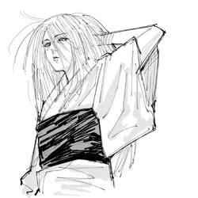

About Tokyo Jujutsu Academy
Our Founder's Legacy

Tengen - Barrier Upholder (1947)
Image: Portrait inspired by Jujutsu Kaisen art style
Tengen is an immortal sorcerer who maintains the Jujutsu Worlds barriers; and has been doing so for over 1000 years. Their origin is unknown, however they have been known to be an ally to the Jujutsu Society. Master Tengen is responsible for laying down the foundation of what jujutsu sorcery has come to be today.
Tengen, while being a large figure in the jujutsu world, doesnt govern the society. The ones who created Tokyos Jujutsu Academny consisted of the Gojo, Kamo, and Zenin clan. These are the major clans who govern everything Jujutsu Related. The families have come together to form a school board referred to as the higher ups.
What Makes Us Unique
Centuries of Knowledge
Our academy preserves techniques and knowledge passed down through generations of sorcerers, dating back to the Heian period. Our archives contain information all about cursed spirits and cursed energy.
Personalized Training
Every student receives individualized teachings and guidance based on their unique cursed energy applications. We have a seasoned community dedicated to our students development as sorcerers.
Legendary Figures
Our graduates include some of the most famed sorcerers of modern day; from Special Grade Sorcerers to heads of major jujutsu families, our community consists of various profaned figures.

Original Academy Building, circa 1900
Image: Fictional historical photograph inspired by Jujutsu Kaisen
Our Mission
"To train the next generation of Jujutsu Sorcerers in cursed energy manipulation and marital arts, ensuring humanity's safety against supernatural threats for centuries to come."